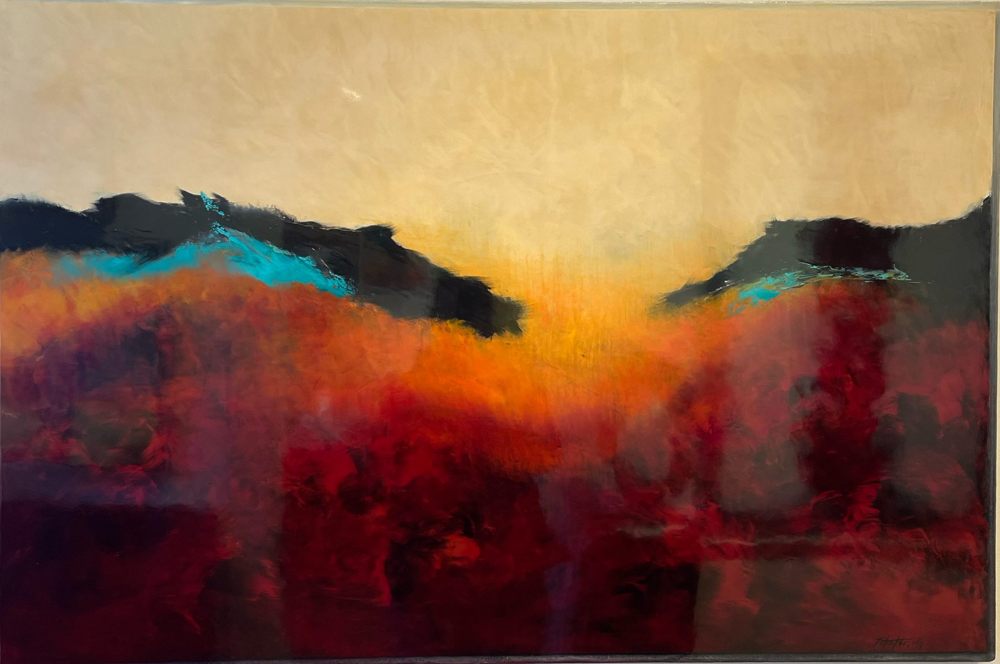
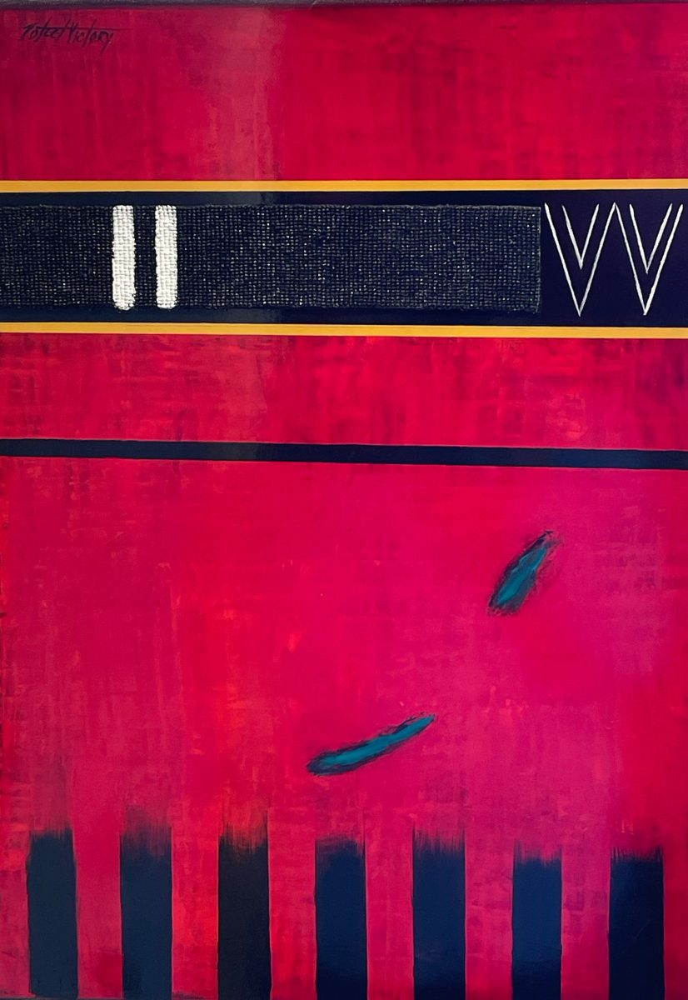
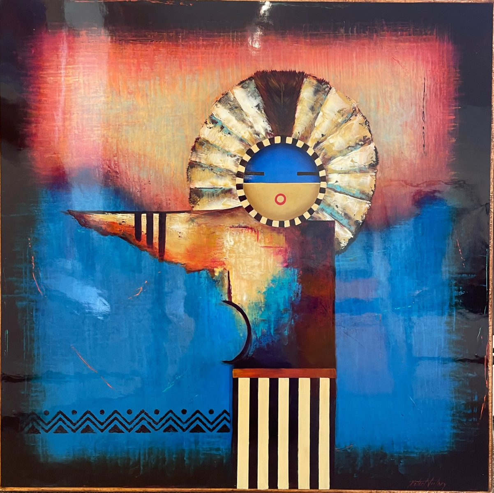
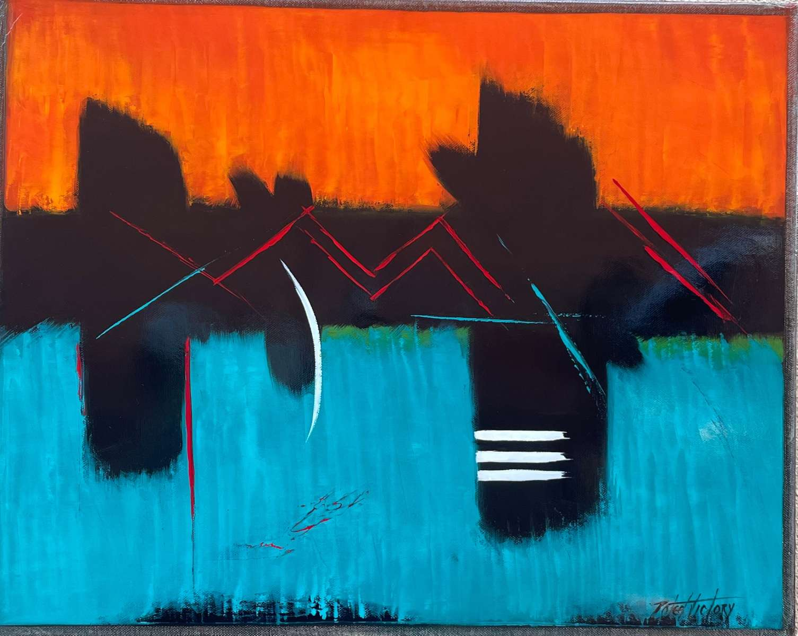
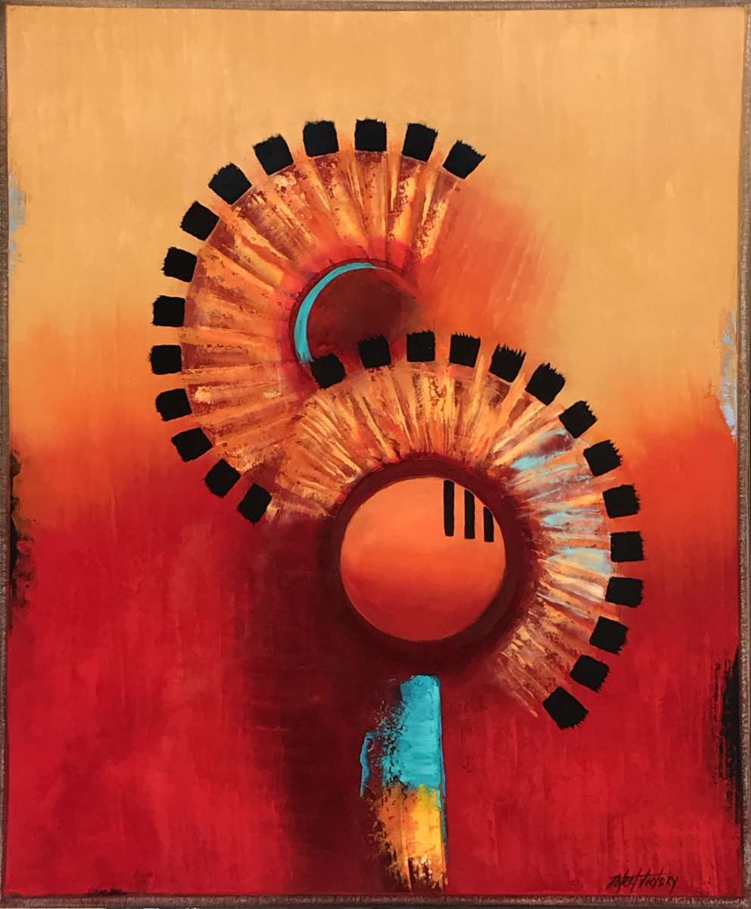
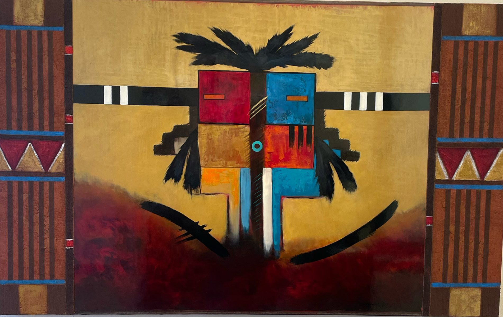
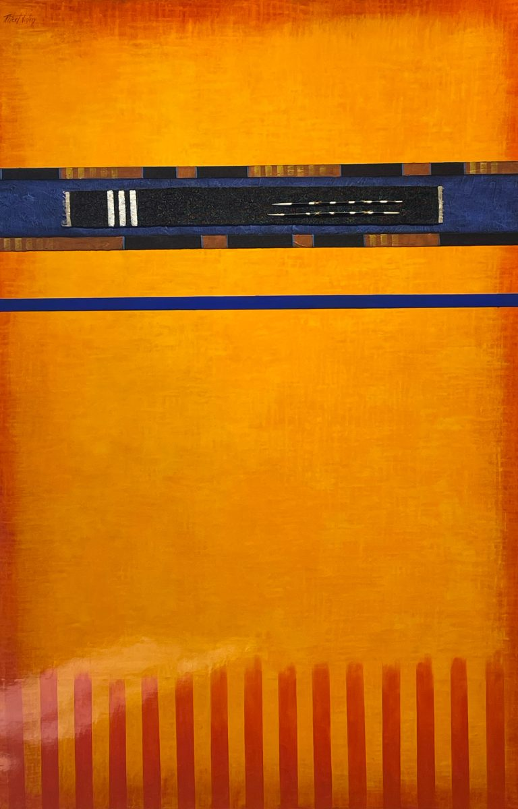
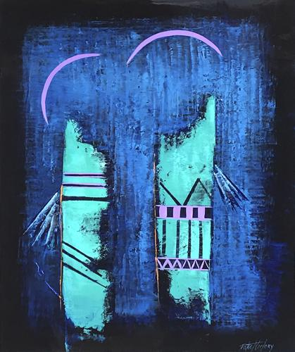
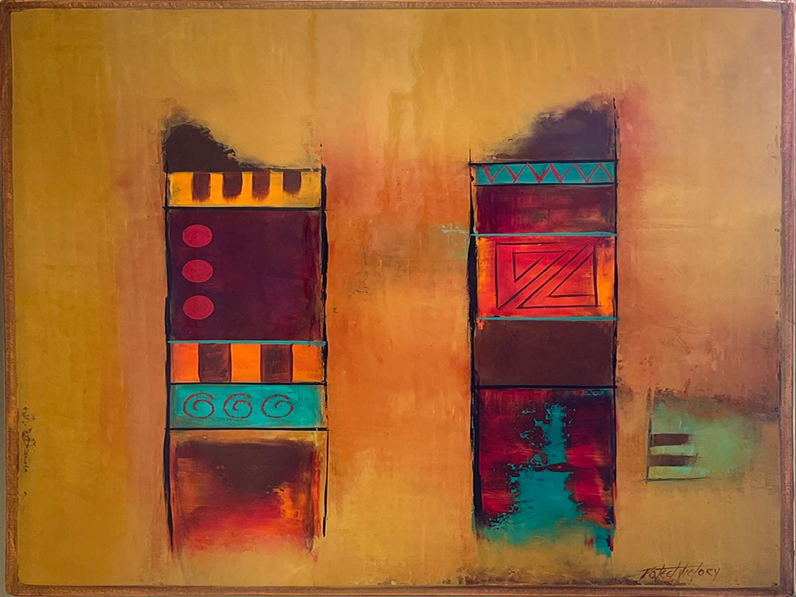
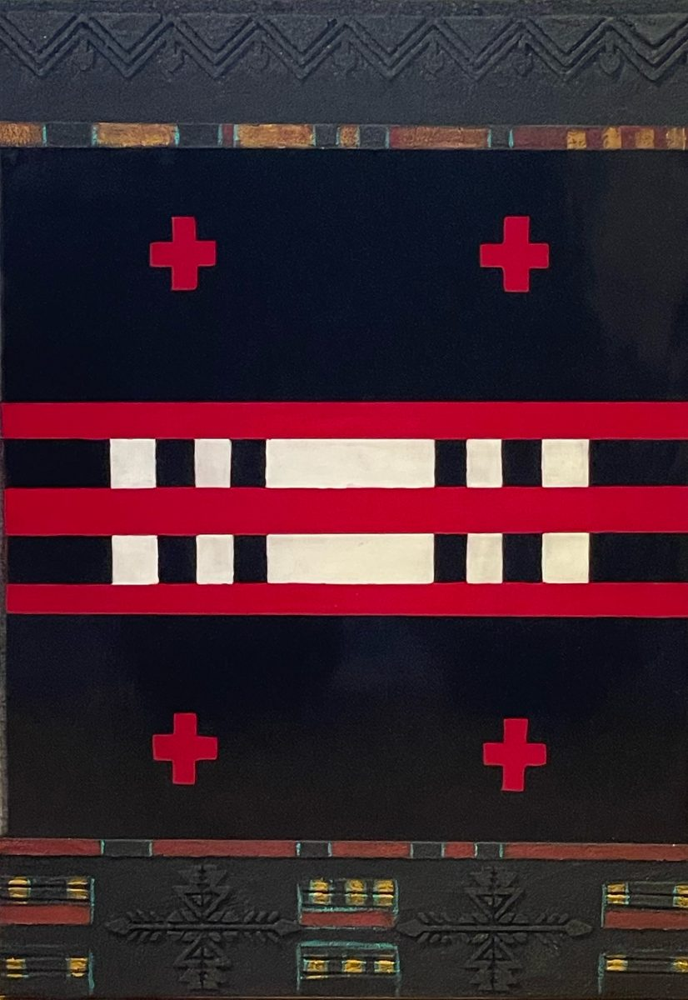

A three-project slate honoring the art and life of Cherokee-Choctaw painter Poteet Victory — feature film, prestige docuseries, and monumental immersive experience.
He rode bulls bareback at thirteen. By thirty, he had built a million-dollar T-shirt silkscreening empire in Dallas — clients included Frito-Lay, CBS Records, Waylon Jennings, and Willie Nelson — and sold it.
His first contact in New York City was Andy Warhol, introduced through his early mentor Harold Stevenson, the abstract expressionist whose work hangs in the Guggenheim. He studied at the Art Students League. He moved to Santa Fe in 1989 with nothing, bartended at Vanessie's, hung his paintings on the wall — and they sold.
He invented the palette knife as his singular voice. Abandoned brushes entirely. Created an abstract style unlike anything in the Western canon — glossy, layered, carrying Indigenous symbols and archetypes without illustrating them literally. The work emerges from a subconscious space. Collectors say it does something to them they cannot fully articulate.










The Forrest Gump of the art world. Based on the biography by J. Robert Keating.
Poteet Victory's life is episodic, picaresque, and insistently American — unfolding across decades and geographies that few audiences have ever seen on screen. From the rodeo circuit of southeastern Oklahoma to Andy Warhol's Factory to the galleries of Santa Fe, this is the story of an Indigenous man who refused to be erased.
The story doesn't travel in a straight line. It circles back on itself, the way memory does. And at the center of it all is Terry — who arrives late in real time, but haunts the film from its opening frame. The Jenny model: her presence makes the whole arc legible in retrospect.
Season One follows eight extraordinary Indigenous painters of the American West — each a master, each erased from the dominant art historical record — and asks the question Western art never dared: whose story was never told, and why? Poteet Victory leads the way.
The thematic spine is Poteet's Trail of Tears mural: commissioned, censored, and stored — a wound that opens in Episode 3 and resurfaces in the finale. Three voices per episode: Artist, Narrator, Historian.
Indigenous art transformed into monumental immersive experience — with celebrated immersive artist Massimiliano ("Max") Siccardi.
The paintings of Poteet Victory and fellow Indigenous masters, rendered at architectural scale through cutting-edge immersive technology. Art that has been kept outside the frame — marginalized, censored, or simply never shown — made impossible to look away from.
The Invisible Canvas operates as a standalone cultural event and as a live complement to both the feature film and the docuseries — extending the slate's reach into the experiential economy and creating a physical presence that neither film nor television can replicate.
The market for prestige Indigenous storytelling has arrived. Reservation Dogs, Prey, and Killers of the Flower Moon have demonstrated that audiences seek out these stories when made with authenticity and craft. What has not yet been made is the definitive portrait of a living Indigenous visual artist — someone whose biography is as compelling as the work itself, and whose IP has been properly secured.
This slate is a three-track strategy across narrative film, prestige documentary, and immersive experience — each self-standing, each reinforcing the others, each approaching the same subject from a different angle and reaching a different audience.
The legal groundwork is complete. What moves forward is creative and financial.